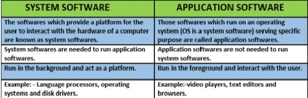

CIML002 Tutoral 1
- The term hardware refers to the computer's physical components, such as the monitor, keyboard, memory chips and hard drive.
- Part of a computer that allows a user to put information into the computer: Input Device
- The printer is an output device which produces output on paper.
- Parts of a computer that allow the user to see or hear information that comes out from the computer: Output Device
- A program that controls a computer's basic function: Operating System
- Computers process data into information
- The data processing cycle is composed of the functions of : input, store, processing, and output
- All of the following are widely used input devices except the printer and monitor
- The mouse is a small handheld input device that controls the movement of a small symbol on the screen called the pointer
- A microphoneis an input device that allows a user to speak into the computer to enter data and instructions.
- Each of the following is a commonly used output device except a scanner.
- All of the above comprise an information processing system.
- Which applications software is best for viewing a website? Web browser
- A computer use which type of number system to calculate and to store data: binary
- Label the layers (Layer 1 to 3) that make up the Conceptual view of a computer system: Layer 1: Hardware, Layer 2: Software, Layer 3: Data
- Compare Application Software and System Software.
